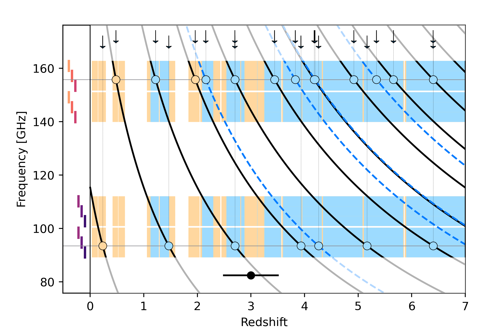

3D visualisation and manipulation of scientific data in static web applications
Presentation for Nordic-RSE 2025
Joakim Bohlin, InfraVis, Chalmers E-commons
Outline
- Introduction
- Example projects
- Tutorial: Create your own static website!
Feel free to ask questions at any time!
About me
- Software engineering at Chalmers
- Complex Adaptive Systems at Chalmers
- Self-assembly of DNA nanostructures in Oxford
- More DNA nanostructures at ASU (Arizona)
- Digital Research Engineer (E-Commons, InfraVis) at Chalmers
Static websites?
Static websites?
- Static does not mean non-interactive
(This presentation is a static website) - No need for a backend
(Can be hosted on e.g. a github page) - No installation required by user
(and no dependency issues) - Data can be supplied by user while staying local
(No authentication needed)
Example projects
Redshift search graphs
Infravis user: Tom Bakx (Chalmers)https://github.com/tjlcbakx/redshift-search-graphs

Redshift search graphs
- How to make this more accessible?
- How to simplify the visualisation?
VegView
Visualisation of a Dynamic Global Vegetation Model

VegView
Visualisation of a Dynamic Global Vegetation Model
VegView
Visualisation of a Dynamic Global Vegetation Model
oxView
An structure editor for DNA nanotechnology
DNA nanostructures in AR
Proteins in AR
Tutorial: Create your own static website!